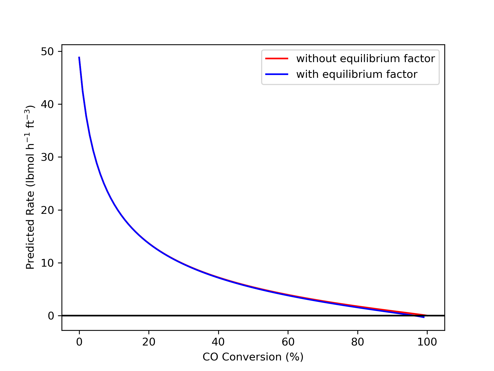
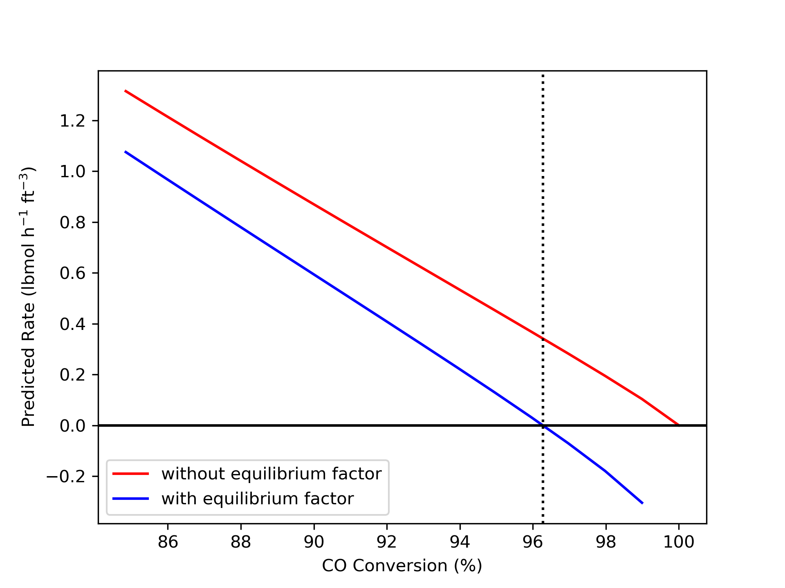
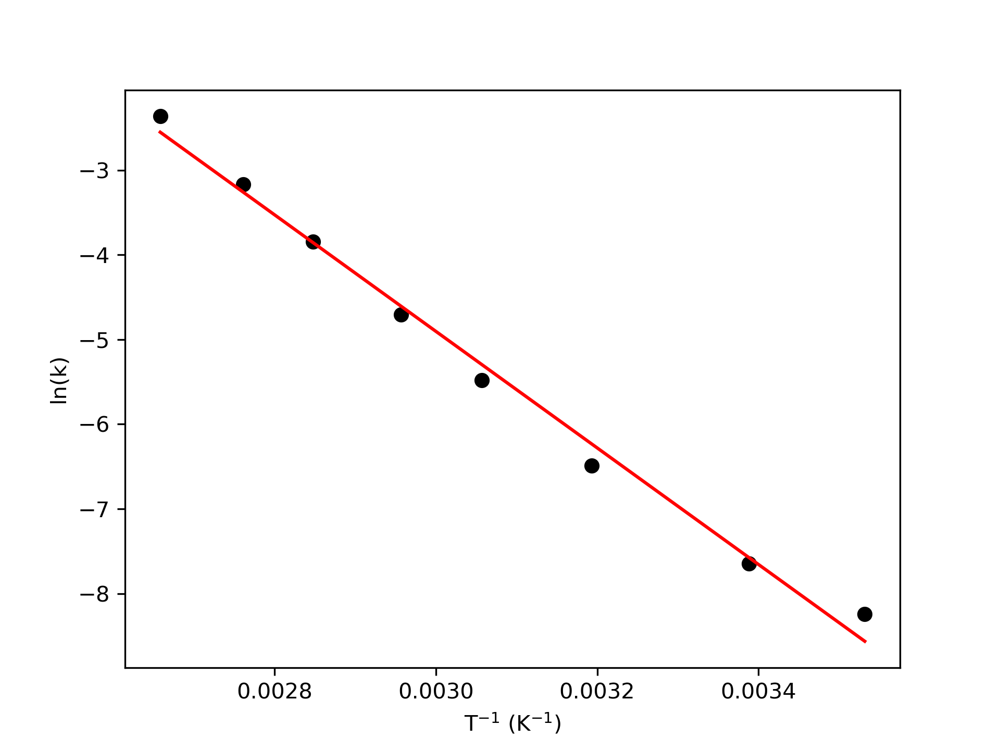
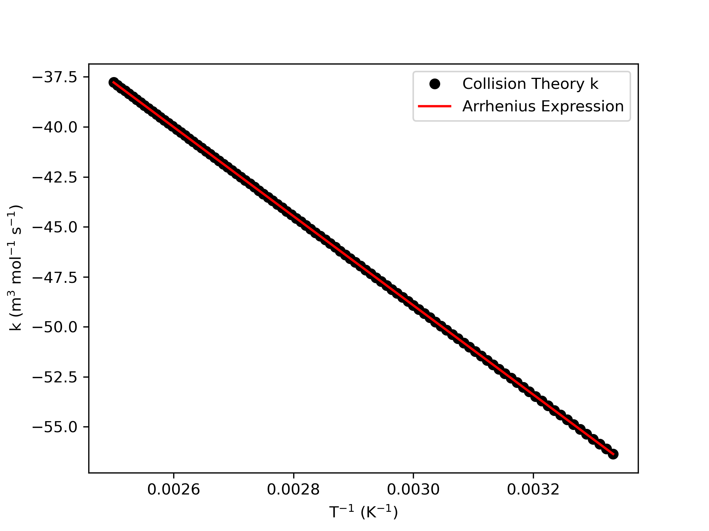

3 Reaction Rates and Rate Expressions
Chapter 2 examined the origins of reaction stoichiometry and defined a few variables for characterizing how far a reaction has progressed from a known starting composition. This chapter extends those concepts by defining reaction rates to quantify how fast a reaction progresses. It considers the factors that affect reaction rates and expressions for calculating rates as functions of those factors. It may prove helpful to keep the Learning Objectives in Section 3.6 in mind while reading it.
3.1 Reaction Rates
The true extent of reaction \(j\), \(\Xi_j\), was defined in Chapter 2.1 to be the net number of times molecular reaction event \(j\) has occurred, expressed in moles. Consider a volume of fluid, \(V\), where the temperature, pressure and composition are uniform and within which reaction \(j\) is taking place. The instantaneous net rate of reaction \(j\), \(r_j\), is then defined as shown in Equation 3.1. When this definition is used, the rate is said to be normalized per unit volume, and the rate is an intensive quantity.
\[ r_j = \frac{1}{V} \frac{d\Xi_j}{dt} \tag{3.1}\]
Rates can be normalized using quantities other than the volume. Generally, the best normalization factor is the size of the location where the reaction takes place. The systems considered so far in Reaction Engineering Basics, were a single phase fluid. For a single phase fluid, the reaction takes place everywhere in the fluid, so the volume is a good normalization factor. When two phases are present, it may be more complicated. For example, the reaction may only take place at the interface between the two phases, and in this case the interfacial area would be the best normalization factor.
In practice, normalization factors are sometimes chosen for convenience. As an example, the mass of a solid catalyst is often used to normalize heterogeneous catalytic reaction rates. A heterogeneous catalyst is a material that exists as a separate phase in contact with the fluid containing the reagents, typically a solid in contact with a gas or liquid. It causes the rate of reaction to increase, but it is neither a reactant nor a product of the reaction. The reaction does not take place within the solid mass of the catalyst, but instead on its surface. Nonetheless, it is quite common to normalize heterogeneous catalytic reaction rates using the mass of the catalyst.
It is straightforward to renormalize a rate. All that is needed is the ratio of the factor used to normalize the rate to the desired normalization factor. In the example of a catalytic reaction normalized per catalyst mass, knowing the ratio of the mass of catalyst to the surface area of the catalyst, the rate per catalyst mass multiplied by that ratio would equal the rate per catalyst area.
The rate as defined in Equation 3.1 is based upon the reaction expression. The net rate of generation of reagent \(i\) due to the occurrence of reaction \(j\) is determined by the stoichiometry as shown in Equation 3.2. Recalling the sign convention for stoichiometric coefficients, if \(i\) is a reactant, its stoichiometric coefficient, and hence its rate of generation, will be negative. This make sense since a reactant is consumed by the reaction. A negative rate of generation is the same as a positive rate of consumption. If multiple reactions are taking place, the overall net rate of generation of \(i\) is the sum of its net rate of generation in each reaction.
\[ r_{i,j} = \nu_{i,j} r_j \tag{3.2}\]
Equation 3.1 and Equation 3.2 are expressions for the net rate of reaction \(j\) and the net rate of generation of \(i\) via reaction \(j\). It is also possible to define two absolute rates, one in the forward direction and the other in the reverse direction. The net rate of reaction defined in Equation 3.1 is then simply the difference between the absolute rates as shown in Equation 3.3.
\[ r_j = r_{j,f} - r_{j,r} \tag{3.3}\]
3.1.1 Cell Growth Rates
Many important chemicals are produced biologically. As a living cell grows, it takes in nutrients and excretes wastes until it eventually divides into two cells or dies. The waste produced during cell growth can be valuable chemicals such as penicillin. It is sometimes possible to treat the cell growth process as if it is a chemical reaction. When this is possible, the methods of chemical reaction engineering can be applied to design and operate the process.
Different nomenclature is used to describe cell growth than is used to describe chemical reactions. The reactors are often referred to as chemostats or fermentors. The nutrients being fed to the system are often called substrates and not reactants.
Another difference between cell growth and chemical reactions is that there isn’t any stoichiometry associated with cell growth. In order to treat cell growth like a chemical reaction, it is necessary to use an average ratio of nutrient consumption to cell mass increase. This effective stoichiometry is typically expressed in terms of masses. Similarly, cell growth rates are typically defined in terms of cell mass as shown in Equation 3.4. The related specific cell growth rate, \(\mu\), is defined as shown in Equation 3.5, where \(\tilde{C}_{cells}\) is the mass concentration of cells.
\[ r_g = \frac{1}{V}\lim _{\Delta t \to 0} \frac {\Delta m_{cells}}{\Delta t} = \frac{1}{V} \frac{dm_{cells}}{dt} \tag{3.4}\]
\[ \mu = \frac{r_g}{\tilde{C}_{cells}} \tag{3.5}\]
3.2 Composition of Reacting Systems
Reaction rates are affected by temperature, pressure, and composition. In Reaction Engineering Basics gases are always assumed to be ideal, and liquids are assumed to be incompressible, ideal mixtures. Put differently, the equation of state for gases in a closed system is Equation 3.6 and for open systems it is Equation 3.7. The equation of state for liquids is Equation 3.8.
\[ PV=RT\sum_i n_i \tag{3.6}\]
\[ P\dot V=RT\sum_i \dot n_i \tag{3.7}\]
\[ \rho = \text{constant} \tag{3.8}\]
In addition to temperature, reaction rates are affected by the concentrations of the reagents. By definition, the concentration of reagent \(i\) in a closed system is given by Equation 3.9. In an open system concentration is defined in terms of molar and volumetric flow rates, Equation 3.10.
\[ C_i = \frac{n_i}{V} \tag{3.9}\]
\[ C_i = \frac{\dot n_i}{\dot V} \tag{3.10}\]
For gas phase systems, the partial pressure is related to the concentration, Equation 3.11 (closed) and Equation 3.12 (open), and so, gas-phase rates are affected by partial pressure.
\[ P_i = \frac{n_i}{\sum_i n_i}P = \frac{n_iRT}{V} = C_iRT \tag{3.11}\]
\[ P_i = \frac{\dot n_i}{\sum_i \dot n_i}P = \frac{\dot n_iRT}{\dot V} = C_iRT \tag{3.12}\]
3.2.1 Instantaneous Yield and Selectivity
Section 2.4 introduced the overall yield and overall selectivity as measures of reaction progress. In that chapter it was noted that an instantaneous yield and an instantaneous selectivity can also be defined. Now, having defined species generation rates, that is possible. The instantaneous yield of product D from reactant \(i\) is simply the ratio of the rate of generation of D divided by the rate of consumption of \(i\), Equation 3.13. The negative sign in Equation 3.13 is needed to convert the rate of generation of \(i\) in the denominator to a rate of consumption. The rate of any reaction is expected to vary as the temperature, pressure and composition vary. That is the reason for referring to \(Y_{D/i,inst}\) as the instantaneous yield. It will change as the composition changes.
\[ Y_{D/i,inst} = - \frac{\displaystyle \sum _j r_{D,j}}{\displaystyle \sum _j r_{i,j}} \tag{3.13}\]
In an analogous manner, the instantaneous selectivity for the product, D, relative to the product, U, can be defined as shown in Equation 3.14. Selectivities can involve groups of products, e. g. selectivity for olefins relative to parafins. In that case, the numerator in Equation 3.14 would need an additional sum over all products, D, that were olefins and the denominator would need an additional sum over all products, U, that were parafins.
\[ S_{D/U,inst} = \frac{\displaystyle \sum _j r_{D,j}}{\displaystyle \sum _j r_{U,j}} \tag{3.14}\]
3.3 Rate Expressions
A rate expression is an equation for calculating the net rate of a reaction as a function of temperature, pressure and composition. All rate expressions must satisfy three requirements. First, a rate expression must be single-valued. At a points in space with a given temperature, pressure and composition, the rate will always be the same. If the rate expression had two (non-imaginary) roots at those conditions, one would not know which was the correct rate. Hence rate expressions must be single-valued.
The second requirement relates to equilibrium. When a reacting system reaches equilibrium, the composition stops changing. Hence, when a temperature, pressure and composition that correspond to thermodynamic equilibrium are substituted into a rate expression, it must evaluate to give a net rate of zero. The absolute forward and absolute reverse rates are non-zero but equal to each other at equilibrium, resulting in a net rate of zero. For this reason, it is not uncommon for the equilibrium constant to be present in one of the terms in a rate expression.
The third requirement seems obvious, but is worth mentioning. A rate expression must be consistent with experimental rate data, and accurately predict observed reaction rates at all temperatures, pressures, and compositions. Theory does not predict the mathematical form of rate expressions for non-elementary reactions. It must be established through experimental study. While the form of rate expressions for elementary reactions is predicted by theory, the values of rate expressions parameters must be determined experimentally for both elementary and non-elementary reactions.
3.3.1 Empirical Rate Expressions
In Reaction Engineering Basics, the term empirical rate expression is used to refer to an experimentally validated rate expression in which the mathematical form was chosen for convenience. Power-law rate expressions are very common empirical rate expressions. In a power-law rate expression, the rate is proposed to depend upon the concentration or partial pressure (for gases) of each reagent in the system raised to an unknown power as shown in Equation 3.15 and Equation 3.16. The \(k_j\) in those equations is called the rate coefficient for reaction \(j\). Clearly, its units and magnitude in Equation 3.15 will be different from those in Equation 3.16. Rate coefficients depend only on temperature and are discussed later in this chapter.
\[ r_j = k_j \prod_i C_i^{\alpha_i} \tag{3.15}\]
\[ r_j = k_j \prod_i P_i^{\alpha_i} \tag{3.16}\]
In power-law rate expressions, the exponents, \(\alpha_i\), are unknown rate expression parameters. Their values are determined experimentally. They do not necessarily equal the stoichiometric coefficients of the reagents, nor are they necessarily integers or simple fractions. Due to the empirical nature of power-law rate expressions, the manner in which the exponents depend upon temperature is not known. The rate may not depend on the amount of every species in the system. That is, for some reagents, \(\alpha_i\) may be equal to zero. The sum of all of the exponents is known as the reaction order. The value of the exponent, \(\alpha_i\) is the reaction order in reagent \(i\).
The net rate of a reversible reaction will go to zero (due to reaching equilibrium) while reactants are still remaining. A power-law rate expression will not predict this. Any rate expression can be modified so that it does properly evaluate to zero at equilibrium simply by multiplying it by the factor shown in Equation 3.17. That factor assumes that \(K_{j,c}\) is a concentration-based equilibrium constant for reaction \(j\). An equivalent factor using partial pressures and a partial pressure-based equilibrium constant can be used with ideal gases, Equation 3.18. Notice that within these factors, the exponent for each species’ concentration is its stoichiometric coefficient in reaction \(j\). That is, there aren’t any unknown parameters in these factors.
\[ \left\{ 1 - \frac{\displaystyle \prod_i C_i^{\nu _i,j}}{K_{j,c}} \right\} \tag{3.17}\]
\[ \left\{ 1 - \frac{\displaystyle \prod_i P_i^{\nu _i,j}}{K_{j,p}} \right\} \tag{3.18}\]
Power-law rate expressions can sometimes be used for heterogeneous catalytic reactions. Often, however, they do not describe the variation of the rate with sufficient accuracy. An old paper by Yang and Hougen (1950) provides a set of tables that can be used to generate many mathematical functions that can be tested as rate expressions for heterogeneous catalytic reactions.
As previously noted, it is sometimes possible to model processes involving the growth of living cells as if they involved chemical reactions. Rate expressions are needed in order to do so. One common expression for the specific cell growth rate is the Monod equation, Equation 3.19. In that expression \(\mu_{max}\) and \(K_s\) are rate expression parameters, and their values are determined experimentally. The substrate concentration, \(\tilde{C}_S\), in Equation 3.19 is a mass concentration, not a molar concentration.
\[ \mu = \frac{\mu_{max}\tilde{C}_S}{K_s + \tilde{C}_S} \tag{3.19}\]
3.3.2 Theoretical Rate Expressions
It was noted above that theory does not predict the mathematical form of the rate expression for a non-elementary reaction. The reason for this is that a non-elementary reaction doesn’t occur as a single event at the molecular level. All bond breaking and bond forming does not occur simultaneously, and as a consequence, intermediate species are created. In other words, a non-elementary reaction is actually a group of elementary reactions that is treated as if it were a single reaction. As such, it does not lend itself to a general theoretical treatment.
In contrast, an elementary reaction can be considered from a theoretical perspective because it is a single molecular event where all breaking and forming of bonds is simultaneous. Using theory, the mathematical form of rate expressions for elementary reactions can be predicted. Two such theories for doing so are described in Appendix B. One is called collision theory, and the other is called transition state theory.
Collision theory is based upon the kinetic theory of gases. It treats reactants as hard spheres and assumes that reactions are the result of collisions between reactants. Specifically, it assumes that molecular velocities obey a Maxwell-Boltzmann distribution, and that when molecules with sufficient kinetic energy collide, they react.
Transition state theory assumes that the reactants in a system are in a kind of thermodynamic equilibrium with activated complexes (see Chapter 2.1) that are forming products. It uses statistical thermodynamics to determine the number of such complexes and the frequency at which they decompose. The absolute rate in the forward direction is then taken to equal to the product of those two quantities.
According to either theory, the net rate of elementary reaction \(j\) can be written as shown in Equation 3.20, where \(k_{f,j}\) denotes the rate coefficient for reaction in the forward direction, \(k_{r,j}\) denotes the rate coefficient for reaction in the reverse direction, \(i_r\) indexes the reactants, and \(i_p\) indexes the products. In both theories the forward and reverse rate coefficients are each proportional to the exponential of the negative of an activation energy divided by the product of the gas constant and the absolute temperature, Equation 3.21. They differ, however, in the temperature dependence of the pre-exponential factor, \(k_0\).
\[ r_j = k_{f,j} \prod_{i_r} C_{i_r}^{-\nu_{i_r,j}} - k_{r,j}\prod_{i_p} C_{i_p}^{\nu_{i_p,j}} \tag{3.20}\]
\[ k_j = k_{0,j} \exp{\left( \frac{-E_j}{RT} \right)} \tag{3.21}\]
For an ideal gas system, the concentration of reagent \(i\) is equal to its partial pressure divided by \(RT\). Making that substiution for each concentration in Equation 3.20 and incorporating the \(RT\) terms into the forward and reverse pre-exponential factors yields a rate expression for an elementary reaction, \(j\), in terms of partial pressures.
\[ r_j = k_{f,j} \prod_{i_r} P_{i_r}^{-\nu_{i_r,j}} - k_{r,j}\prod_{i_p} P_{i_p}^{\nu_{i_p,j}} \tag{3.22}\]
Reaction 3.23 is a unimolecular reaction, and unimolecular reactions are not elementary reactions (Lindemann et al. (1922)). Nonetheless, the rate expression resulting from application of Equation 3.20 or 3.22 is generally found to be valid unless the pressure is very low. In Chapter 4, unimolecular reactions will be treated like elementary reactions and Equation 3.20 or 3.22 will be used as their rate expression, as shown in Equations 3.24 and 3.25.
\[ A_2 \rightleftarrows 2 A \tag{3.23}\]
\[ r = k_f C_{A_2} - k_r C_A^2 \tag{3.24}\]
\[ r = k_f P_{A_2} - k_r P_A^2 \tag{3.25}\]
It is not possible to discern whether a reaction is elementary by simply looking at the reaction expression. Unless one knows from other information that a reaction is elementary, the rate expressions in Equations 3.20 and 3.22 should be treated as postulated rate expressions until they have been validated using experimental data.
Finally it is important to realize that the forward and reverse rate coefficients for an elementary reaction, \(j\), are related to each other through the equilibrium constant for reaction \(j\), Equation 3.26.
\[ K_j = \frac{k_{f,j}}{k_{r,j}} \tag{3.26}\]
3.3.3 Mechanistic Rate Expressions
The kinetics theories do not apply directly to non-elementary reactions because non-elementary reactions actually take place through a sequence of elementary reactions known as a mechanism. The kinetics theories do apply to each of the steps in the mechanism. Thus, if the steps that make up the mechanism are known, it is possible to generate a rate expression for the non-elementary reaction. The generation of mechanistic rate expressions is the focus of Chapter 4.
3.4 Arrhenius Temperature Dependence
In 1889 Arrhenius proposed Equation 3.21 (reproduced below) to explain the temperature dependence of rate coefficients (Svante Arrhenius 1889). When both the pre-exponential factor, \(k_{0,j}\), and the activation energy, \(E_j\), are constants that have unique values for each reaction, \(j\), Equation 3.21 is called the Arrhenius expression. Quantities that depend upon temperature in that way are said to display Arrhenius temperature dependence. Absolute temperatures must be used in the Arrhenius expression.
\[ k_j = k_{0,j} \exp{\left( \frac{-E_j}{RT} \right)} \]
While the pre-exponential factor, \(k_{0,j}\), is treated as a constant in the Arrhenius expression, collision theory predicts that it is proportional to the square root of the temperature. Transition state theory predicts that the pre-exponential factor is proportional to the temperature and that it also contains partition functions for the reagents that depend in various ways upon the temperature. It was noted above, that the rate expression for an elementary reaction can be converted to pressure units by using the ideal gas law to express the concentrations in terms of partial pressures, and that the temperature terms can be incorporated in the pre-exponential factor yielding Equation 3.22.
In each of those situations, the pre-exponential factor depends upon temperature in a different way. However, the temperature dependence of rate coefficients is dominated by the exponential term containing the activation energy. The temperature dependence of the pre-exponential factor is much weaker, making it very difficult to measure. Consequently, in most situations the pre-exponential factor can be taken to be a constant.
Chapter 2.3 noted that equilibrium constants can appear in rate expressions. If the entropy and enthalpy changes for a reaction are assumed to be constant, Equation 2.20, equilibrium constants display Arrhenius temperature dependence as shown in Equation 3.27, where \(K_{0,j}\), Equation 3.28, is analogous to the pre-exponential factor in the Arrhenius expression. One difference between the Arrhenius expression and Equation 3.27 is that the activation energy, \(E_j\), is always positive while the standard heat of reaction, \(\Delta H_j^0\), can be positive or negative.
\[ K_j = K_{0,j}\exp{\left( \frac{-\Delta H_j^0}{RT} \right)} \tag{3.27}\]
\[ K_{0,j} = \exp{\left( \frac{\Delta S_j^0}{R} \right)} \tag{3.28}\]
Linear least squares parameter estimation (see Appendix D.1) is used to determine whether a quantity (\(k\) in this case) exhibits Arrhenius temperature dependence. Taking the logarithm of both sides of the Arrhenius expression results in Equation 3.29. Substituting \(y = \ln{k}\) and \(x = 1/T\) then gives the straight line shown in Equation 3.30 with , \(m = -E/R\) and \(b=\ln{k_0}\) .
\[ \ln{\left(k \right)} = \frac{-E}{R} \left( \frac{1}{T} \right) + \ln{\left(k_0 \right)} \tag{3.29}\]
\[ \begin{matrix} y = \ln{\left(k \right)} \\ x = \displaystyle \frac{1}{T} \end{matrix} \quad \Rightarrow \quad y = m x + b \quad \Rightarrow \quad \begin{matrix} m = \frac{-E}{R} \\ b = \ln{\left(k_0 \right)} \end{matrix} \tag{3.30}\]
Starting with a set of \(\underline{k}\) vs. \(\underline{T}\) data, a corresponding set of \(\underline{y}\) vs. \(\underline{x}\) data is calculated. Linear least squares parameter estimation is then used to find the best estimates for \(m\) and \(b\), their 95% confidence intervals, and the coefficient of determination, \(R^2\). An Arrhenius plot is generated by plotting the \(\underline{y}\) vs. \(\underline{x}\) data and a line with a slope of \(m\) and intercept of \(b\) on the same graph.
If the data lie close to the line with random scattering above and below, the coefficient of determination is close to 1, and the limits of the parameter’s 95% confidence intervals are close to their estimated values, then \(k\) displays Arrhenius temperature dependence. Estimates for the pre-exponential factor, \(k_0\), the activation energy, \(E\), and their 95% confidence intervals can be calculated from the estimated slope, \(m\), intercept, \(b\), and their 95% confidence intervals using their definitions as shown in Equation 3.30.
3.5 Typical Rate Behavior
Due to the Arrhenius temperature dependence of rate coefficients, reaction rates typically increase with increasing temperature. Increasing the concentration of the reactants typically increases the reaction rate, too. Far from equilibrium, a typical reaction rate may not be affected by the concentration of the products, but as the reaction approaches equilibrium, increasing product concentration typically decreases the reaction rate. When reaction rates do not behave in these typical ways, special names are sometimes given to them.
A reaction is said to be auto-catalytic if its rate increases with increasing product concentration. This behavior is observed far from equilibrium. Eventually, as the reaction approaches equilibrium, the rate must decrease with increasing product concentrations until it becomes equal to zero at equilibrium.
When increasing product concentrations far from equilibrium cause the reaction rate to decrease, the reaction is said to be product-inhibited. Similarly, if increasing the concentration of some other reagent causes the rate to decrease, the reaction is said to be inhibited by that reagent. Increasing the concentration of reactant typically causes the rate to increase, when it does the opposite and causes the rate to decrease, the reaction is reactant-inhibited. All of these behaviors must fade as the system approaches equilibrium so that the net rate approaches zero.
Classification of reaction kinetics as typical, auto-catalytic, product-inhibited, etc. is useful during the qualitative analysis of a reacting system. When combined with knowledge of whether the reaction is exothermic or endothermic and whether heat is being removed or added it provides understanding of why the temperature, composition, rate and conversion vary as they do over the course of a reaction.
3.6 Learning Objectives and Examples
Upon completion of this chapter, readers should
- know the definition/defining equation for reaction rate, species generation rate, net rate, forward rate, reverse rate, empirical/theoretical/mechanistic rate expression, Arrhenius expression, pre-exponential factor, activation energy, typical/auto-catalytic/product-inhibited/reactant-inhibited reactions
- understand
- the functional form of rate expressions is only known a priori for elementary reactions
- rate expressions must be experimentally validated
- rate expressions must be single-valued and evaluate to zero at equilibrium
- be able to
- renormalize a reaction rate (3.6.1)
- convert reaction rates to species generation rates and vice versa (3.6.1)
- write a power-law rate expression (3.6.2)
- modify a rate expression so that the rate it predicts goes to zero as equilibrium is approached (3.6.2)
- estimate Arrhenius expression parameters using experimental data (3.6.3)
- test whether a quantity displays Arrhenius temperature dependence given either data or an expression for its dependence on temperature (3.6.4)
As was the case with Chapter 2, the information presented in this chapter will be used as one small part of reactor analyses that are performed in later chapters.
3.6.1 Renormalizing and Rewriting a Species Generation Rate as a Reaction Rate
The synthesis of ammonia, reaction (1), is one of the highest production chemical processes in the world. (One reason for this is that ammonia is used to make fertilizer.) It is a heterogeneous catalytic reaction. The ammonia synthesis catalyst takes the form of pellets that pack into the the reactor with an apparent density of 155 lbm ft-3. Rase (1977) provides the expression in equation (2) for the rate of generation of ammonia via reaction (1). In that expression, \(E_1\) is the activation energy, \(K_{1,eq}\) is the equilibrium constant and \(a_i\) represents the thermodynamic activity of reagent \(i\).
\[ 3 H_2 + N_2 \rightleftarrows 2 NH_3 \tag{1} \]
\[ \begin{align} r_{NH_3,1} &= 1.54 \times 10^{15} \exp{\left( \frac{-E_1}{RT} \right)} \\ &\times \left[ K_{1,eq}^2\left( \frac{a_{N_2}a_{H_2}^{1.5}}{a_{NH_3}} \right) - \left( \frac{a_{NH_3}}{a_{H_2}^{1.5}} \right) \right] \frac{\text{kmol NH}_3}{\text{m}_{\text{bed}}^3 \text{h}} \end{align} \tag{2} \]
Write an expression for the general rate of reaction (1), \(r_1\), that is normalized per lbm of catalyst.
The task here is straightforward. I am given a species generation rate and asked to convert it to a reaction rate. Equation 3.2 is used for this conversion. Here the species, \(i\), is NH3 which has a stoichiometric coefficient of +2 in reaction (1).
\[ r_{i,j} = \nu_{i,j} r_j \quad \Rightarrow \quad r_j = \frac{r_{i,j}}{\nu_{i,j}} \]
I’m also asked to re-normalize the rate per lbm of catalyst. To do that, I need to know how it currently is normalized. The units of a reaction rate are always moles per time per normalization factor. For a rate expression, that means that if you multiply the units of the rate coefficient by the units of the composition variables in the rate expression, you should end up with units of moles per time per normalization factor.
Looking at equation (2) I see that the rate coefficient has units of moles (actually kmol NH3) per time per volume of the bed (in cubic meters). The equilibrium constant and the thermodynamic activities do not have units, so the rate also has units of moles per time per volume of the bed. Thus the current rate normalization factor is the volume of the catalyst bed. The problem asks for a rate normalized per mass of catalyst, so I need to multiply the current rate by the volume of the bed and divide by the equivalent mass of catalyst in the bed. Here that ratio is given in the problem statement. It is the reciprocal of the apparent density, so dividing equation (2) by the apparent density will renormalize the rate.
Equation 3.2 can be used to convert the species generation rate to the general reaction rate as shown in equation (3), which is still normalized by the bed volume. Dividing by the apparent bed density then gives an expression for the rate, \(r^\prime_1\) that is normalized per mass of catalyst, equation (4).
\[ \begin{align} r_1 &= \frac{r_{NH_3,1}}{\nu _{NH_3,1}} = \frac{r_{NH_3,1}}{2} \\& =\frac{1.54 \times 10^{15}}{2} \exp{\left( \frac{-E_1}{RT} \right)} \\ &\times \left[ K_{1,eq}^2\left( \frac{a_{N_2}a_{H_2}^{1.5}}{a_{NH_3}} \right) - \left( \frac{a_{NH_3}}{a_{H_2}^{1.5}} \right) \right] \frac{\text{kmol NH}_3}{\text{m}_{\text{bed}}^3 \text{h}} \end{align} \tag{3} \]
\[ \begin{align} r^\prime_1 &= \frac{r_1}{\rho_{bed}} \\ &=\frac{1.54 \times 10^{15}}{2\left(155 \frac{\text{lb}_{\text{m}}}{\text{m}_{\text{bed}}^3}\right)} \exp{\left( \frac{-E_1}{RT} \right)} \\ &\times \left[ K_{1,eq}^2\left( \frac{a_{N_2}a_{H_2}^{1.5}}{a_{NH_3}} \right) - \left( \frac{a_{NH_3}}{a_{H_2}^{1.5}} \right) \right] \frac{\text{kmol NH}_3}{\text{m}_{\text{bed}}^3 \text{h}} \end{align} \]
\[ \begin{align} r^\prime_1 &= 1.76 \times 10^{14} \exp{\left( \frac{-E_1}{RT} \right)} \\ &\times \left[ K_{1,eq}^2\left( \frac{a_{N_2}a_{H_2}^{1.5}}{a_{NH_3}} \right) - \left( \frac{a_{NH_3}}{a_{H_2}^{1.5}} \right) \right] \frac{\text{kmol}}{\text{lb}_{\text{m}} \text{h}} \end{align} \tag{4} \]
Notice that the value of \(k_0\) changed from \(1.54 \times 10^{15}\) to \(1.76 \times 10^{14}\) and the units changed from \(\text{kmol NH}_3\) \(\text{m}_{\text{bed}}^{-3}\) \(\text{h}^{-1}\) to \(\text{kmol}\) \(\text{lb}_{\text{m}}^{-1}\) \(\text{h}^{-1}\). One might reasonably ask “if it isn’t kmol of NH3, then kmol of what?” The answer is found in Equation 3.1. It is kmol of extent of reaction.
3.6.2 Ensuring a Rate Expression Predicts a Net Rate of Zero at Equilibrium
The water-gas shift, reaction (1), is used commercially to remove CO impurities from hydrogen. Suppose the rate expression shown in equation (2) was validated using experimental data that were far from thermodynamic equilibrium. At 675 K, the rate coefficient, \(k_1\), was found to equal to 3.37 lbmol h-1 ft-3 atm-0.55. In equation (3), that power-law rate expression has been multiplied by a factor that will force it to evaluate to zero at equilibrium. At 675 K, the equilibrium constant, \(K_1\) is equal to 12.0.
If a system initially containing 75% H2O, 24% CO, and 1% CO2 at 10 atm and 675 K reacts isothermally and isobarically, the equilibrium conversion of CO will equal 96.3%. The net rate should go to zero at this conversion.
\[ CO + H_2O \rightleftarrows CO_2 + H_2 \tag{1} \]
\[ r_1 = k_1 P_{CO}^{0.9} P_{H_2O}^{0.25} P_{CO_2}^{-0.6} \tag{2} \]
\[ r_1 = k_1 P_{CO}^{0.9} P_{H_2O}^{0.25} P_{CO_2}^{-0.6} \left\{ 1 - \frac{P_{CO_2} P_{H_2}}{K_1 P_{CO} P_{H_2O}} \right\} \tag{3} \]
For the system described above, make a plot of the net rate of reaction (1) predicted by equations (2) and (3) at CO conversions between 0 and 100%. Then make a second plot at conversions between 85 and 100%. Comment upon the results.
I’m asked to make graphs showing rate versus conversion. Two ranges of conversion are specified, and I’m given the temperature, pressure, and initial composition. I will need the partial pressures of the reagents to calculate the rate. I know the initial composition and I can choose the conversions to be plotted, so the first part of this problem is basically a reaction progress problem, similar to those presented in Chapter 2.4.
None of the quantities that are given are extensive, so I may choose a basis. Since I’m given the initial percentages of the reagents, I’ll choose the initial total moles as a basis.
I’ll use subscripted zeroes to denote initial values.
After choosing a basis of one mole initially present, equation (4), the initial molar amounts of the reagents can be calculated, equations (5) through (8).
\[ n_{total,0} = 1.0 \text{ mol } \left(\text{basis}\right) \tag{4} \]
\[ n_{CO,0} = y_{CO,0} n_{total,0} = 0.75 \text{ mol} \tag{5} \]
\[ n_{H_2O,0} = y_{H_2O,0} n_{total,0} = 0.24 \text{ mol} \tag{6} \]
\[ n_{CO_2,0} = y_{CO_2,0} n_{total,0} = 0.01 \text{ mol} \tag{7} \]
\[ n_{H_2,0} = y_{H_2,0} n_{total,0} = 0 \text{ mol} \tag{8} \]
Knowing the initial moles of CO, the final moles of CO at any conversion can be calculated using the definition of conversion, equation (9). Knowing that, the extent of reaction can be calculated, equation (10).
\[ n_{CO} = n_{CO,0}\left(1 - f_{CO}\right) \tag{9} \]
\[ n_{CO} = n_{CO,0} - \xi_1 \quad \Rightarrow \quad \xi_1 = n_{CO,0} - n_{CO} \tag{10} \]
The final molar amounts of the other reagents can next be computed using their initial amounts and the extent of reaction, equations (11) through (13).
\[ n_{H_2O} = n_{H_2O,0} - \xi_1 \tag{11} \]
\[ n_{CO_2} = n_{CO_2,0} - \xi_1 \tag{12} \]
\[ n_{H_2} = \cancelto{0}{n_{H_2,0}} + \xi_1 \tag{13} \]
The total number of moles does not changed due to reaction, so the final mole fractions of the reagents equals their final molar amounts divided by the initial total moles. Multiplying the total pressure by the final mole fractions yields the partial pressures of the reagents, equations (14) through (17).
\[ P_{CO} = \frac{n_{CO}}{n_{total,0}}P \tag{14} \]
\[ P_{H_2O} = \frac{n_{H_2O}}{n_{total,0}}P \tag{15} \]
\[ P_{CO_2} = \frac{n_{CO_2}}{n_{total,0}}P \tag{16} \]
\[ P_{H_2} = \frac{n_{H_2}}{n_{total,0}}P \tag{17} \]
With those results, the rates predicted by equations (2) and (3) can be calculated for any CO conversion.
3.6.2.1 Results and Discussion
The calculations were performed as described above. Figure 3.1 shows the rate of reaction (1) predicted by equations (2) and (3) at conversions between 0 and 100%, based upon isothermal, isobaric reaction of an initial mixture containing 75% H2O, 24% CO, and 1% CO2 at 10 atm and 675 K. Figure 3.2 shows the same data, but only for conversions between 85 and 100%.


The figures allow two important observations. First, Figure 3.1 shows that adding the term to force proper behavior at equilibrium does not affect the predicted rate at conditions far from equilibrium. Hence, since rate expression (2) was validated and found to be accurate at conditions far from equilibrium, the figure shows that rate expression (3) will be equally accurate at those conditions.
Second, Figure 3.2 shows that when the reaction reaches equilibrium at 96.3% conversion (dashed line in the figure), rate expression (2) predicts that the net rate will equal 0.37 lbmol h-1 ft-3 while rate expression (3) correctly predicts the rate will be zero. The consequences of using rate expression (2), for example to design a reactor where the conversion approaches equilibrium, could be severe. The design calculations would indicate that, for example, 98% conversion could be achieved in the reactor, but of course, if the reactor was built, the conversion would never exceed 96.3%. If rate expression (3) was used to design a reactor, the calculations would indicate that the largest possible conversion is 96.3%.
Conversions greater than equilibrium can not be attained starting with the mixture described in the narrative and reacting at constant \(T\) and \(P\). However, one could make a mixture with a composition corresponding to conversion of the starting mixture by more than 96.3%. Figure 3.2 shows that if one did this, equation (3) predicts the reaction of that mixture would have a negative rate. That is, the reaction would proceed in the reverse direction, and when it reached a composition equivalent to 96.3% conversion of the initial mixture in the problem statement, the rate would again go to zero because the system would be at equilibrium. While this behavior is qualitatively correct, equation (3) should not be used to predict the rate of the reverse reaction because it has not been experimentally validated. Instead, a reverse rate expression should be developed experimentally.
3.6.3 Estimating the Pre-exponential Factor and Activation Energy in the Arrhenius Expression
Kinetic studies were performed at a number of different temperatures, \(T\), to find the value of a second order rate coefficient, \(k\), at those temperatures. The results for each experiment, \(i\), are given in the table below. Determine whether the temperature dependence of this rate coefficient is consistent with the Arrhenius expression, and find the best values for the pre-exponential factor and the activation energy.
| i (Experiment Number) | T (°C) | k (L mol–1 min–1) |
|---|---|---|
| 1 | 10 | 2.63 \(\times\) 10-4 |
| 2 | 22 | 4.78 \(\times\) 10-4 |
| 3 | 40 | 1.52 \(\times\) 10-3 |
| 4 | 54 | 4.18 \(\times\) 10-3 |
| 5 | 65 | 9.07 \(\times\) 10-3 |
| 6 | 78 | 2.14 \(\times\) 10-2 |
| 7 | 89 | 4.2 \(\times\) 10-2 |
| 8 | 103 | 9.42 \(\times\) 10-2 |
The data are available in the .csv file, example_3_6_3_data.csv.
This assignment presents experimental \(\underline{k}\) vs. \(\underline{T}\) data and then asks whether those data are “consistent with” the Arrhenius expression, Equation 3.21. In other words, does the Arrhenius expression accurately predict the value of the rate coefficient, \(k\), at each of the Celsius temperatures, \(T\), listed in Table 3.1.
I know that if the data display Arrhenius temperature dependence, then according to Equation 3.29 a plot of \(\ln{k}\) vs. \(\frac{1}{T}\) will yield a straight line. Before making that graph, the temperature must be converted to absolute units.
To better assess the accuracy of the Arrhenius expression, I can use linear least squares to fit a straight line to the data (see Appendix D.1). The Arrhenius activation energy will then equal the gas constant times the negative of the slope, and the Arrhenius pre-exponential factor will equal the exponential of the intercept.
The linearized Arrhenius expression, Equation 3.29, is reproduced below as equation (1). When \(y\) and \(x\) are defined as shown in equation (2), the equation has the form of a straight line, \(y=mx+b\), with the slope, \(m\), equal to \(\frac{-E}{R}\) and the \(y\)-intercept, \(b\), equal to \(\ln{k_0}\).
\[ \ln{\left(k \right)} = \frac{-E}{R} \left( \frac{1}{T} \right) + \ln{\left(k_0 \right)} \tag{1} \]
\[ \begin{matrix} y = \ln{\left(k \right)} \\ x = \displaystyle \frac{1}{T} \end{matrix} \quad \Rightarrow \quad y = m x + b \quad \Rightarrow \quad \begin{matrix} m = \frac{-E}{R} \\ b = \ln{\left(k_0 \right)} \end{matrix} \tag{2} \]
I need to calculate vectors, \(\underline{x}\) and \(\underline{y}\), using the \(\underline{k}\) and \(\underline{T}\) data provided with the assignment narrative and plot \(\underline{y}\) vs. \(\underline{x}\). Then I need to use linear least squares to find the slope, \(m\), and intercept, \(b\), of the best straight line through the data (see Appendix D.1).
The linear least squares analysis will also yield a coefficient of determination, \(R^2\), and uncertainties for the slope and intercept. If the data are accurately described by the Arrhenius expression, \(R^2\) will be close to 1.0 and the uncertainties will be small.
Generating the plot and performing the least squares analysis can be accomplished using either a spreadsheet program or a mathematics software package.
After converting the temperature from °C to K, the data in Table 3.1 were used to calculate corresponding sets of values of \(\underline{x}\) and \(\underline{y}\). Linear least squares was then used to find the slope and intercept of the best straight line through the resulting data. The resulting Arrhenius plot is shown in Figure 3.3.

The linear least squares analysis yielded the coefficient of determination, \(R^2\), the slope, \(m\), the upper and lower limits of the 95% confidence interval for the slope, \(m_{CI_u}\) and \(m_{CI_l}\), the intercept, \(b\), and the upper and lower limits of the 95% confidence interval for the intercept, \(b_{CI_u}\) and \(b_{CI_l}\). Referring to equation (2), the activation energy, pre-exponential factor and their 95% confidence intervals were calculated using equations (3) through (8).
\[ m = \frac{-E}{R} \qquad \Rightarrow \qquad E = -mR \tag{3} \]
\[ E_{CI_u} = -m_{CI_u}R \tag{4} \]
\[ E_{CI_l} = -m_{CI_l}R \tag{5} \] \[ b = \ln{k_0} \qquad \Rightarrow \qquad k_0 = \exp{\left(b\right)} \tag{6} \]
\[ k_{0,CI_u} = \exp{\left(b_{CI_u}\right)} \tag{7} \]
\[ k_{0,CI_l} = \exp{\left(b_{CI_l}\right)} \tag{8} \]
3.6.3.1 Results and Discussion
The calculations were performed as described, yielding a coefficient of determination, \(R^2\), equal to 0.992. The best estimate for \(k_0\) is 6.97 \(\times\) 106 L mol–1 min–1, 95% CI [1.01 \(\times\) 106, 4.79 \(\times\) 107], and that for \(E\) is 57.3 kJ mol-1, 95% CI [52, 62.5].
The upper and lower limits of the 95% confidence interval for \(k_0\) are not particularly close to the estimated value, indicating significant uncertainty. However, estimated pre-exponential factors are often found to have large uncertainties. The uncertainty in the activation energy spans 10.5 kJ mol-1, equal to 18% of the estimated value, 57.3 kJ mol-1. The coefficient of determination is quite close to 1.0.
While the model plot shows good agreement between the experimental data and the model, there does appear to be a slight trend in the deviations. At low \(\left(T\right)^{-1}\) the points fall above the line, at intermediate values they are below it, and at the the largest value it is again above the line. Nonetheless, the deviations are small, and it appears that the experimental data are consistent with the Arrhenius expression within the range of temperatures studied. In light of the slight apparent curvature seen in the data, however, the fitted Arrhenius expression should not be extrapolated to higher or lower temperatures than those used in the experiments.
This example illustrated the preferred way to report a value together with its 95% confidence interval: “value units, 95% CI [lower bound, upper bound],” Thus 57.3 kJ mol-1, 95% CI [52, 62.5] means that the estimated value of \(E\) is 57.3 kJ mol-1, and if the same experiments were repeated many times, 95% of those times the estimated value of \(E\) would be between 52 kJ mol-1 and 62.5 kJ mol-1.
3.6.4 Representing a Collision Theory Rate Coefficient Using the Arrhenius Expression
The decomposition of HI, equation (1), is elementary. Collision theory predicts the rate coefficient to depend upon temperature as shown in equation (2) where \(N_{av}\) is Avogadro’s number and \(k_B\) is the Boltzmann constant. The collision cross-section, \(\sigma_{HI-HI}\), is 38.5 Å, the reduced mass, \(\mu\), is 1.063 x 10-22 g, and the activation energy, \(E\), is 184.1 kJ mol-1.
\[ 2 HI \rightleftarrows H_2 + I_2 \tag{1} \]
\[ k = N_{av}\sigma_{HI-HI} \sqrt{\frac{2k_BT}{\pi \mu}} \exp{\left( \frac{-E}{RT}\right)} \tag{2} \]
Use equation (2) to calculate the rate coefficient at several temperatures between 300 and 400 K. Then use the resulting \(\underline{k}\) vs. \(\underline{T}\) data to assess how well the Arrhenius expression describes the rate coefficient.
The assignment provides clear instructions for generating \(\underline{k}\) vs. \(\underline{T}\) data. I know that if the data display Arrhenius temperature dependence, then according to Equation 3.29 a plot of \(\ln{k}\) vs. \(\frac{1}{T}\) will yield a straight line. I can use linear least squares to fit a straight line to the data (see Appendix D.1). The Arrhenius activation energy will then equal the gas constant times the negative of the slope, and the Arrhenius pre-exponential factor will equal the exponential of the intercept.
The closer \(R^2\) is to 1.0, the closer the upper and lower limits of the 95% confidence interval for \(k_0\) are to the estimated value of \(k_0\), and the closer the upper and lower limits of the 95% confidence interval for \(E\) are to its estimated value, the greater the accuracy of the Arrhenius expression in representing the data.
As instructed in the assignment narrative, a range of temperature values between 300 and 400 K was chosen, and equation (2) was used to calculate corresponding values of \(k\). The linearized Arrhenius expression, Equation 3.29, indicates that a plot of \(\ln{k}\) vs. \(\frac{1}{T}\) will yield a straight line if the Arrhenius expression describes the data accurately. So the \(\underline{k}\) vs. \(\underline{T}\) data were used to generate a corresponding set of \(\ln{k}\) vs. \(\frac{1}{T}\) data, and linear least squares was used to fit a straight line to those data. The resulting Arrhenius plot is shown in Figure 3.4.

The figure shows that the data fall nearly perfectly on the least squares line. The activation energy (\(R\) times the negative of the slope) and pre-exponential factor (exponential of the \(y\)-intercept) and their 95% confidence intervals were calculated, along with the coefficient of determination. The activation energy was found to equal 185 kJ mol–1, 95% CI [185, 185], and the pre-exponential factor, 6.48 \(\times\) 107 m3 mol–1 s–1, 95% CI [6.45 \(\times\) 107, 6.5 \(\times\) 107]. The coefficient of determination was 1.
3.6.4.1 Discussion
The Arrhenius plot convincingly shows that the Arrhenius expression offers an extremely accurate representation of the temperature dependence of the collision theory rate coefficient. As noted in Chapter 3.4, the temperature dependence is dominated by the exponential term. The error introduced by ignoring the \(\sqrt{T}\) in the pre-exponential term is negligible. This is evident in Figure 3.4 and supported by the results that \(R^2\) is equal to 1.0, the upper and lower limits of the 95% confidence interval for the activation energy equal the activation energy, and the upper and lower limits of the 95% confidence interval for the pre-exponential factor differ from the estimated value by 0.31%.
3.7 Symbols Used in Chapter 3
| Symbol | Meaning |
|---|---|
| \(i\) | Subscript that indexes reagents; additional subscripted \(r\) and \(p\) denote reactants and products, respectively. |
| \(j\) | Subscript that indexes reactions. |
| \(k_j\) | Rate coefficient for reaction \(j\), additional subscripted \(f\) or \(r\) denotes the forward or reverse reaction. |
| \(k_{0,j}\) | Pre-exponential factor for rate coefficient \(j\). |
| \(m_{cells}\) | Mass of cells. |
| \(n_i\) | Moles of reagent \(i\). |
| \(\dot{n}_i\) | Molar flow rate of reagent \(i\). |
| \(r_g\) | Cell growth rate in mass units. |
| \(r_{i,j}\) | Net rate of generation of reagent \(i\) via reaction \(j\). |
| \(r_j\) | Net rate of reaction \(j\); additional subscripted \(f\) and \(r\) denote the forward and reverse rates. |
| \(t\) | Time. |
| \(C_i\) | Molar concentration of reagent \(i\). |
| \(\tilde{C}\) | Mass concentration, an additional subscript denotes the species. |
| \(E_j\) | Activation energy for reaction \(j\). |
| \(K_j\) | Equilibrium constant for reaction \(j\), additional subsripted \(c\) or \(p\) denote concentration or partial pressure equilibrium constants. |
| \(K_{0,j}\) | Apparent pre-exponential factor for equilibrium constant \(j\). |
| \(K_s\) | Parameter in the Michaelis-Menten rate expression. |
| \(P\) | Pressure. |
| \(P_i\) | Partial pressure of reagent \(i\). |
| \(R\) | Ideal gas constant. |
| \(T\) | Temperature. |
| \(V\) | Volume. |
| \(\dot{V}\) | Volumetric flow rate. |
| \(\alpha_i\) | Power-law reaction order for reagent \(i\). |
| \(\mu\) | Specific cell growth rate or reduced mass. |
| \(\mu_{max}\) | Parameter in the Michaelis-Menten rate expression. |
| \(\nu_{i,j}\) | Stoichiometric coefficient of reagent \(i\) in reaction \(j\). |
| \(\rho\) | Density. |
| \(\Delta H^0_j\) | Standard heat of reaction \(j\). |
| \(\Delta S^0_j\) | Standard entropy change for reaction \(j\). |
| \(\Xi_j\) | True extent of reaction \(j\). |